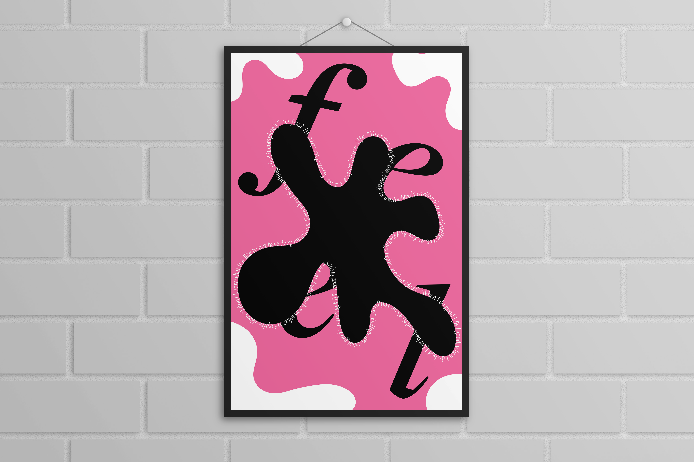
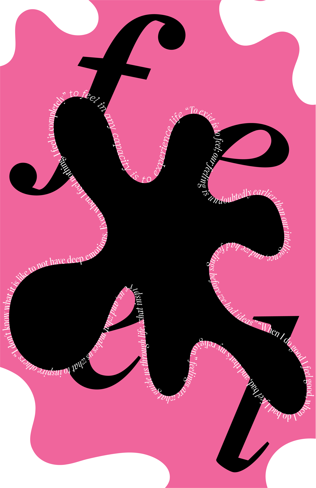

Personal Motto Poster
2024, Adobe Illustrator & InDesign, 11in x 17in
The goal of this project was to design a visually engaging poster that expressed my personal motto through typography, composition, and an experimental anti-grid layout. I began by sketching abstract shapes, writing out my motto, and selecting the key word that best captured its essence. From there, I chose one of my abstract shapes as the foundation and gathered quotes that connected to my message to build the final composition.



